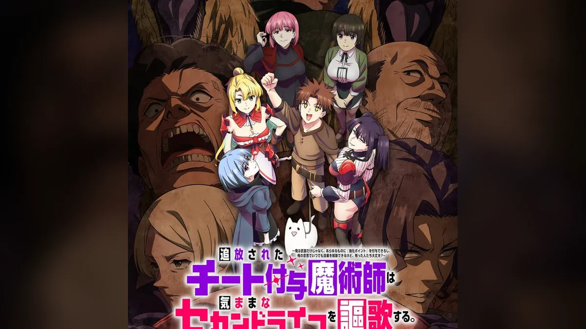

这部退队流新番，
治好了我的异世界疲劳

我对「退队流」已经不抱期待了。被冤枉、被赶走、反手证明自己——这套流程闭着眼都能背下来。十月这部点开时，我是抱着「下饭随便看看」的心态，结果第一集那个开除镜头就把我逗笑了。
雷恩被会长叫去，听到「你被开除了」，第一反应不是愤怒，也不是隐忍，而是——哦，那我把我加的点数全收回来。这个反应太不讲武德了，也太好笑了。因为他一收，原公会上下所有人的装备同时趴窝。
「真正让我追下去的不是数值，是它敢把爽点当笑点用。」
故事：一个「太能干所以被开除」的人
雷恩·加兰德是「王兽之牙」公会的强化付与魔术师，能力是给武器防具附加「强化点数」，而且这些点数他随时能凭自己的意志解除。公会装备全被他强化到顶了，会长巴里奥斯一拍脑袋，觉得这人没用了，就把他赶了出去。
于是雷恩把历年加在同伴装备上的点数全数回收，转手砸进一把廉价铜剑——一万点。铜剑变成传说级武器，普通布衣硬到接近奥利哈钢。
片子没有急着让主角打脸，反而一路让他去做更离谱的事：被人找茬时他说「我现在想被揍肚子」。它更像一群疯子在认真地冒险，而不是一个受害者在复仇。
还有两个设定值得注意。一是这个世界魔法与科技共存，有魔法，也有冲锋枪和黑道，过度依赖科技还会削弱魔力——所以很多桥段没法按套路走，你以为要魔法对轰，对面掏枪了。二是动画改编的是业务用饼的漫画版，原作者六志麻あさ自己打过招呼：「小说版和漫画版内容大概 99% 不同。」拿小说当剧透本，多半会错。
角色：一群被原世界退货的人
雷恩（山下大辉）不是苦大仇深型主角，甚至有点神经。危机里照样讲冷笑话、做让人扶额的举动，队友的吐槽就是观众的嘴。但这份「怪」是有来由的：一个把别人装备强化到极致、自己却连把像样武器都没有的人，本来就没把自己当回事。所以当有人认真对他说「谢谢」的时候，他反而愣住了——这个细节我很吃。
莉莉（Lynn）是 S 级冒险者，履历漂亮，知识和经验都在线，却因为两年前的创伤再也没法战斗。她的看点不是「什么时候恢复实力」，而是她怎么在不能打的前提下，继续当一个冒险者。这种「明明很强却卡住」的设定，比单纯的高冷剑士有意思得多。
玛格丽特（青山吉能）B 级，身边永远跟着一只叫「どんぐり」的狗。她身上有种被保护得很好的千金做派，说话讲究、遇事讲规矩，偏偏总和雷恩的胡来撞在一起。两个人的对话是前期最稳的笑点来源。
米拉贝尔（富田美忧）是由「暗杀之母」养大的杀手，出场自带冷气。她的魅力在于反差：第一次有人不把她当工具，而是当一个普通女孩对待时，她那种不知所措。
艾尔茜与妮娜（潘惠美 / 小原好美）是青之水晶的会长和前台。一个见过世面的前强者，一个嘴上嫌弃却一直在收拾烂摊子。她们让这个「专收怪人的公会」有了家的质感——说白了，雷恩能这么胡来，是因为背后有人兜着。
观感：它其实在讲「重新过日子」
制作是 P.A.WORKS，监督本间修（《派对浪客诸葛孔明》《深夜重拳》），系列构成米内山阳子，搞笑和煽情两头都稳。OP 是 sumika 的《エンバートーチ》，前奏一响就想跟着晃。
它没打算讲多宏大的故事。一群被原来的世界退过货的人，凑在一起重新学着怎么过日子——听着很轻，落在具体的人身上却有分量。
如果你也看腻了「复仇爽文」式的退队流，想找一部笑点密、但不刻薄的片子下饭，这部可以试三集。三集之后还没笑，那就真的不是你的菜。
题图与正文配图均来自官方公开物料及 ANI-BOX、AnimeID 的报道页，版权归「チー付与」製作委員会所有，仅作介绍用途。